乡觅网，带您寻找美好的乡村之旅
已登录
乡觅首页
景点玩乐
新闻资讯
民俗节日
乡觅社区
预定中心
个人主页
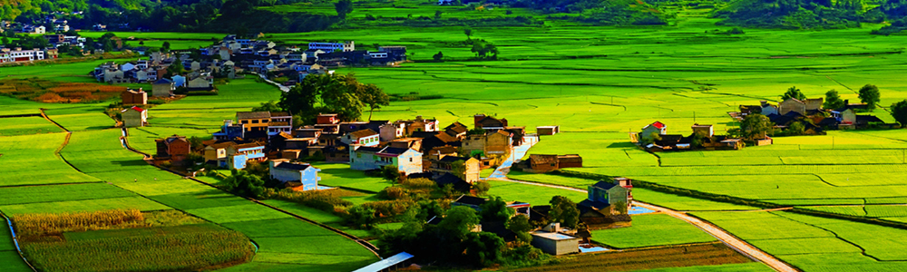
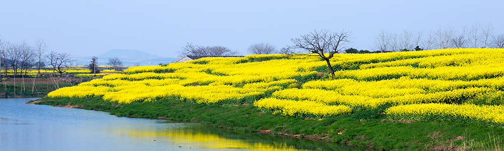
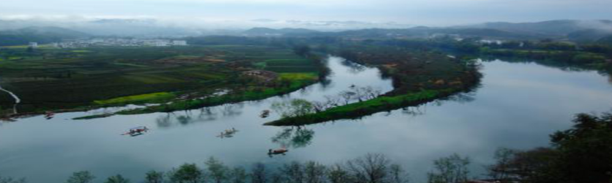
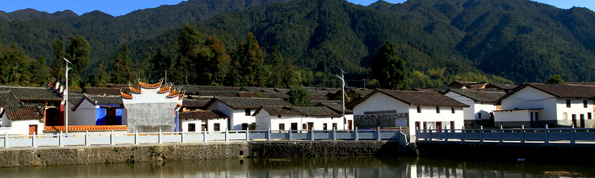
旅游景点
▽
丽江
大理
黎平
新疆
蒙古
江南
海岛
山城
苗寨
西江千户苗寨是黔东南苗族侗 族自治州一个保存苗族“原始 生态”文化完整的地方是目前 中国最大的苗族聚居村寨。
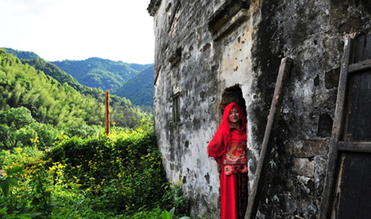
白石岭
皖南古寨隐匿的600年古村， 至今保存着完整的村落风貌。这里有老房老屋老院墙，残垣断壁，优美的自然环境，古朴的民俗风情。
平凉
甘肃崆峒山秋季美景如画。 崆峒山位于甘肃省平凉市城西，是古丝绸之路西出关中之要塞。 景区集奇险灵秀的自然景观和古朴精湛的人文景观于一身 ，具有观赏、文化和科考价值。
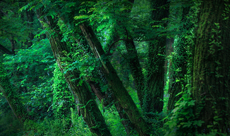
广丰
幽深的林子，古木参天，足够静谧。这样的环境， 没有人工建设的痕迹，一条弯弯的小路，挽着一条弯弯的溪流， 绿水回环，两岸便生出一团团的绿，一簇簇的花。眼帘的帷幕， 即刻被开启，目遇成色，耳闻成声。
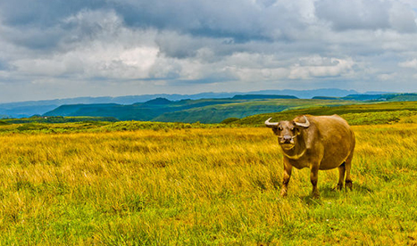
龙里大草原
这里拥有美丽的草原自然风光， 古朴的蒙古族风情以及独特的生活方式、 悠久的历史文化和宜人的避暑气候， 这里既有一望无际、空阔幽深的壮阔美 ，也有风吹草底见牛羊的动态美;又有蓝天白云、绿草入茵、 牧人策马的人与自然的和谐美。
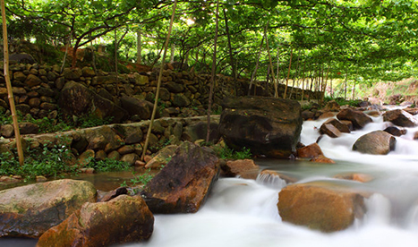
葡萄沟
从吐鲁番市遥望火焰山,赤砂灼灼,草木不生。 但火焰山峡谷中距市区约15公里的葡萄沟, 却别有洞天,景色秀丽。与沟外形成鲜明的对照 。一进沟口,铺绿叠翠,茂密的葡萄田漫山遍谷。
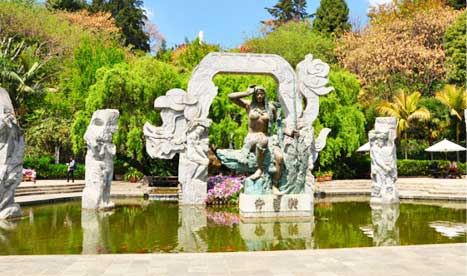
南诏风情岛
大理南诏风情岛是洱海三岛之一，位于苍洱风景名 胜区的黄金地段---洱源县东南端的双廊乡境内。
元阳哈尼梯田
它是哈尼族人民与哀牢山大自然相融的相谐互促互 补的天人合一的人类大创造。
普者黑
大理南诏风情岛是洱海三岛之一，位于苍洱风景名 胜区的黄金地段---洱源县东南端的双廊乡境内。
崇圣寺三塔
大理旅游的标志，是大理历史文化的见证。“万古云 霄三塔影，诸天风雨一楼钟”，历来为人所乐道。
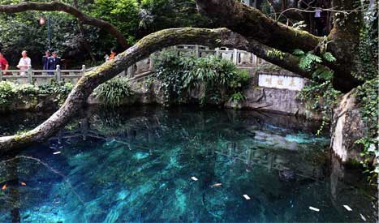
蝴蝶泉
坐落在大理点苍山云弄峰下。它像一颗透明的宝石， 镶嵌在绿荫之中，以它特有的奇观吸引着远近游客。
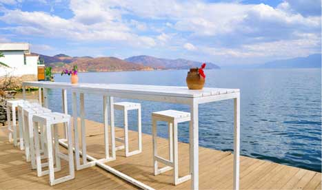
洱海
位于云南大理郊区，为云南省第二大 淡水湖，洱海北起洱源，长约42.58公 里，东西最大宽度9.0公里
<
1
2
3
4
5
6
7
8
9
>